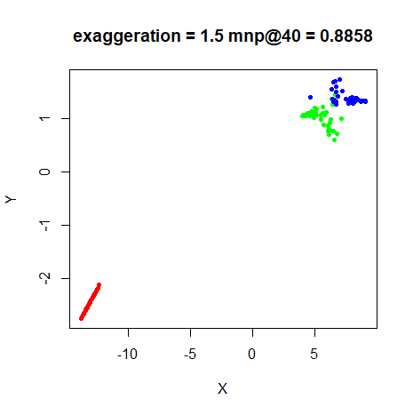
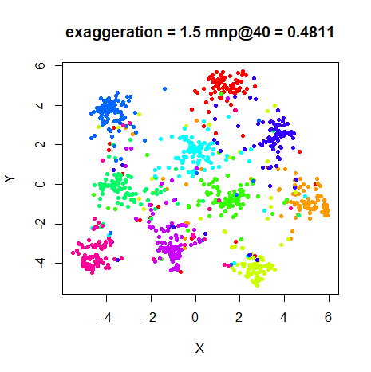
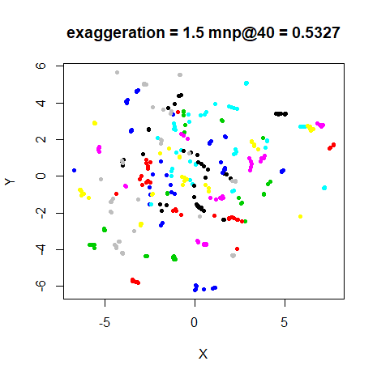
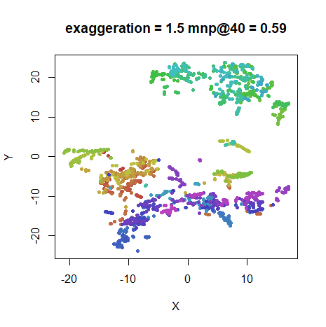
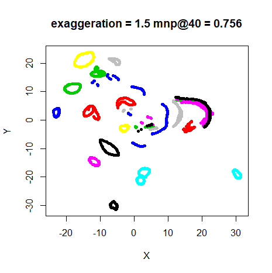
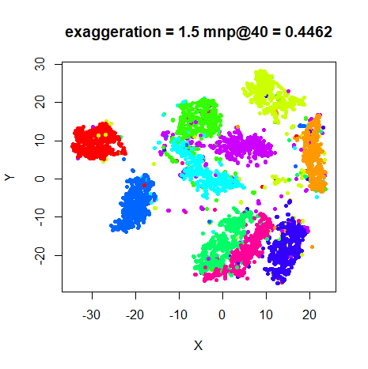
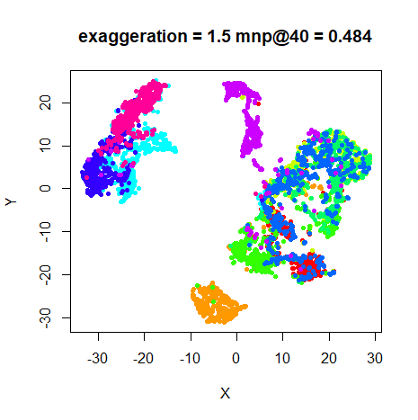

This article retains its original experiments and examples. For current package usage, see the usage guide.
The FIt-SNE paper recommends the technique of “late exaggeration”. This is exactly the same as early exaggeration (multiply the input probabilities by a fixed constant), but doing it at the end of the optimization, rather than the beginning. This seems to have the effect of forcing any clusters to be tighter and further apart, which makes for better visualizations. The effect seems reminiscent of the output of LargeVis and UMAP, in fact.
In the paper, the authors set the exaggeration factor to 12 for the last 250 iterations of an embedding of the entire MNIST digits dataset, which mirrors the recommended setting for early exaggeration with large datasets.
Datasets
See the Datasets page.
Settings
Settings will be the same as the original t-SNE
paper, except with scaled PCA initialization rather than random
initialization. Given that the example in the FIt-SNE paper used late
exaggeration settings that matched the default early exaggeration
settings, we shall do the same here, except that the length and extent
of the early exaggeration is lessened for the sort of datasets that can
be handled by smallvis: the
exaggeration_factor will be 4, and will run
for the last 100 iterations:
iris_late_ex <- smallvis(
iris,
perplexity = 40,
Y_init = "spca",
eta = 100,
exaggeration_factor = 4,
stop_lying_iter = 100,
late_exaggeration_factor = 4,
start_late_lying_iter = 900
)Initial results suggested that the exaggeration factor of 4 was a too
high for late exaggeration, so we will also look at reduced
late_exaggeration_factor values of 2 and
1.5. The early exaggeration factor is unchanged at 4 in
these cases. I looked at also reducing the early exaggeration factor
when the late exaggeration factor was reduced, but it doesn’t have much
of an effect, so we needn’t worry about that.
We’ll also compare results with the standard t-SNE with early exaggeration only:
iris_tsne <- smallvis(
iris,
perplexity = 40,
Y_init = "spca",
eta = 100,
exaggeration_factor = 4,
stop_lying_iter = 100
)Evaluation
Apart from visualizing the results, the mean neighbor preservation of
the 40 closest neighbors (in line with the perplexity) is
used to provide a rough quantification of the quality of the result. On
the plots, this is labelled as mnp@40.
Results
For each dataset, the top left image is the result of using late exaggeration with an exaggeration factor of 4, the top right is with an exaggeration factor of 2, and the bottom left is with an exaggeration factor of 1.5. The bottom right is standard t-SNE with no late exaggeration. All results used early exaggeration with an exaggeration factor of 4.
Conclusions
A late exaggeration of 4 is clearly way too large for the datasets
looked at here. Either 1.5 or 2 seems much more appropriate. For these
settings, we see the expected result of much smaller, better-separated
clusters with little effect on the neighbor preservation values. The
most suitable value seems dataset-dependent (as usual): to my eyes,
iris and oli don’t benefit much from any late
exaggeration, although maybe an exaggeration even more mild than 1.5
would help.
For the other datasets, these results are very reminiscent of the UMAP and u-SNE results, but have the advantage of being faster and easier to optimize.
Finally, if late exaggeration and early exaggeration are useful, why
not always be exaggerating? Below are results from applying a constant
exaggeration with exaggeration_factor = 1.5 by setting
stop_lying_iter = 1000:
 |
 |
 |
 |
 |
 |
 |
It seems that allowing a non-exaggerated phase of the optimization allows the clusters to re-arrange and spread out a bit, because the late-exaggeration results are more spread out (particularly noticeable if you look at the range on the axes), but these constant-exaggeration results look pretty good and still resemble a more-compressed version of the t-SNE results, although probably starting from the usually good scaled PCA initialization may have something to do with that.
If you find that t-SNE results are not separating clusters in your
data in a good way, then it does seem that late exaggeration helps, but
for the datasets that smallvis can deal with, I recommend
an exaggeration_factor of around 1.5, much lower than the
value of 12 mentioned in the FIt-SNE paper, and even 4 is much too large
based on the results shown here.
Momentum and exaggeration length
February 24 2019 Here’s a little addendum to flesh out the discussion on late exaggeration:
Even with the reduced exaggeration, for all examples I looked at, the cost does increase over the last 100 iterations, suggesting that the learning rate or momentum values are too high for the late exaggeration phase.
Normally, mom_switch_iter is set to happen after early
exaggeration finishes, so perhaps we should switch back to the lower
momentum during late exaggeration?
Below are some examples where I modified the code to use the original
momentum value during late exaggeration. I’ve also looked
at using 250 iterations of early and late exaggeration, to see if our
conclusions are affected by more exaggeration time. In the latter case,
max_iter = 1300, so that the same amount of
non-exaggeration optimization was carried out and also
mom_switch_iter = 350, so that there was always 100
iterations of non-exaggerated optimization before the momentum switch
occurred.
A sample command for the longer exaggeration settings is:
iris_tsne <- smallvis(
iris,
perplexity = 40,
Y_init = "spca",
eta = 100,
exaggeration_factor = 4,
stop_lying_iter = 250,
mom_switch_iter = 350,
late_exaggeration_factor = 1.5,
start_late_lying_iter = 1050,
max_iter = 1300,
epoch = 100
)Below are the results. The plots on the left hand side are those
using the original (low) momentum, and those on the right
are from using the final_momentum. The top row uses 100
iterations each for early and late exaggeration, and the bottom row uses
250 iterations each.
fashion6k
For the larger datasets, the extra time in late exaggeration results in more compression of the clusters, but the change in momentum doesn’t seem to do very much. And neighbor preservations aren’t affected. That’s good because reducing the momentum this would introduce coupling between the optimizer and the exaggeration code, which is not something I relish.
If you want to try late exaggeration, my recommendations remain the
same: set late_exaggeration_factor = 1.5, and you probably
don’t need more than 100 iterations.
May 6 2020: Dmitry Kobak notes that the late exaggeration protocol described in the FIt-SNE preprint and replicated here does not appear in its final published form in Nature Methods. A modified protocol (called just “exaggeration”) was published by Dmitry and Philipp Berens in The art of using t-SNE for single-cell transcriptomics and recommends immediately beginning late exaggeration as soon as early exaggeration finishes, so you might want to consider that.